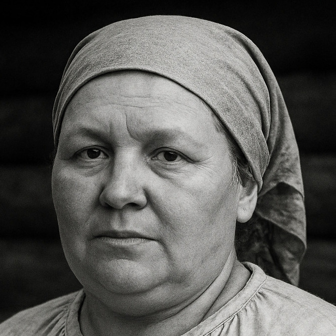

Варвара Васильевна Филимонова

Расчетное ДНК-родство: 3,13%
Девичья фамилия неизвестна. Родилась примерно в 1848 г. в д. Пушкино Подольского уезда Московской губернии (ныне территория Москвы). Эта небольшая деревня располагалась неподалёку от с. Валуево — подмосковной усадьбы графов Мусиных-Пушкиных. В распоряжении этих дворян долгое время оставалась и семья Варвары. Можно сказать, что своим появлением на свет Варвара отчасти обязана именно им. Всё дело в том, что её родители были родом из разных мест. И если её предки по линии отца проживали в той же деревне Пушкино (с момента её основания в 1789 г.), то её мать, Федора Васильевна, не относилась к числу местных.
Случилось так, что задолго до рождения Варвары её отец, Василий Семёнович, овдовел. Та же участь почти в одно время постигла и родственников Василия: одного родного и одного двоюродного брата. Были в этой деревне и другие женихи, а вот невест, похоже, не хватало. По всей видимости, об этом знала и местная барыня — Эмилия Карловна Мусина-Пушкина, — широко известная в светских кругах не только своей миловидной внешностью, но и добрым отношением к крестьянам. Решение проблемы вышло довольно необычным. Так, в феврале 1837 г. в Валуево прямиком из Мологского уезда Ярославской губернии, где у Мусиных-Пушкиных находилось дворянское гнездо, были доставлены сразу девять юных невест. Среди них была и будущая мать Варвары — Федора Васильевна, сирота из деревни Рыбино#. Всех брачующихся обвенчали в один и тот же день.
Уже через год на свет появилась старшая сестра Варвары — Мария (1838), сама же Варвара родилась лишь спустя десятилетие. Хотя в семье рождались и другие дети, никто из них так и не достиг зрелого возраста. Кроме того, под одной крышей с ними жил воспитанник Николай, которого родители Варвары взяли из приюта. Что же касается самих родителей, то к 1865 г. их, похоже, уже не было в живых, и Варвара, ещё будучи подростком, осталась со своей старшей и единственной сестрой Марией и её мужем, Михаилом Семёновичем Юдиным.
Около 1867 г. они сосватали Варвару за Константина Филимонова, что жил в д. Ширяево, в десяти верстах от её родной деревни. Со временем она родила мужу не меньше девяти детей: Ивана (1873–1873), Андрея (1877), Егора (1880), Сергея (1882–1883), Гавриила (1884), Илью (~1887), Екатерину (1888), Марию (~1889) и Василия (1892–1893). При этом младший сын Василий умер в младенчестве от скарлатины, средний сын Сергей скончался от колик, а старший Иван — от оспы. В год его рождения в деревне свирепствовала эпидемия этой тяжёлой вирусной болезни, не щадившей ни детей, ни стариков.
До конца своих дней Варвара Васильевна оставалась в Ширяеве. Там же 14 февраля 1911 г. она умерла «от простуды». На тот момент ей было чуть больше 60 лет.
# Эта деревня, как и большинство других селений Мологского уезда, в 1941 г. попала в зону затопления Рыбинского водохранилища и с тех пор покоится на его дне.
Обоснование родства: запись о рождении Андрея Константиновича Филимонова (1877, приход с. Валуево).
Эта запись, ставшая впоследствии важным связующим звеном, была обнаружена не сразу. Дело в том, что записи о рождении других братьев и сестер Андрея (как старших, так и младших) находились в приходе с. Хатминки, ведь родители Андрея действительно проживали не в приходе Валуева, а в 10 километрах к югу, в д. Ширяево (приход с. Хатминки). В то же время запись о браке Константина Ивановича и Варвары Васильевны не сохранилась в архивах, поэтому ранее не было известно, что невеста была родом из деревни Пушкино, что вблизи с. Валуево Десенской волости. Сделать это открытие удалось лишь благодаря тому, что среди восприемников на крещении одного из первых детей Варвары был некий Михаил Семенович из обозначенной д. Пушкино Десенской волости. В результате был произведен просмотр метрических книг этого прихода и обнаружилась вышеупомянутая запись о рождении Андрея Константиновича. Впоследствии было установлено, что его мать — Варвава Васильевна — жила в Пушкине с рождения и до вступления в брак, а обозначенный выше Михаиал Семенович оказался зятем (мужем сестры) Варвары Васильевны.